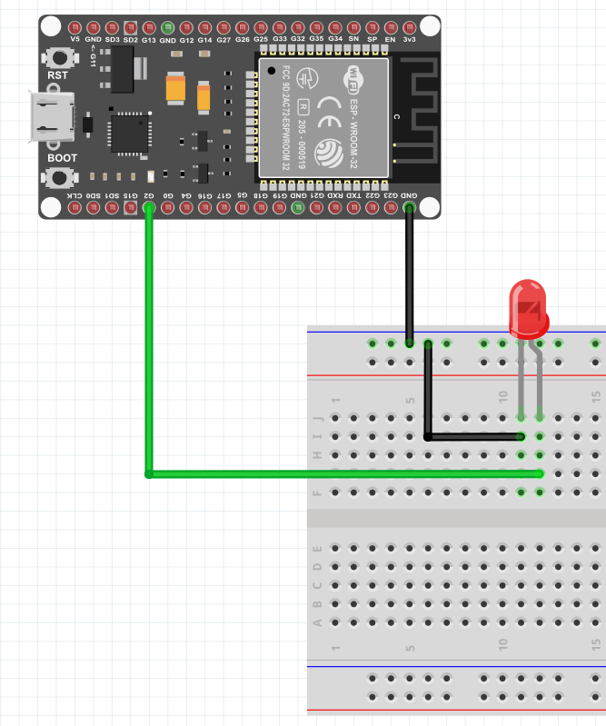
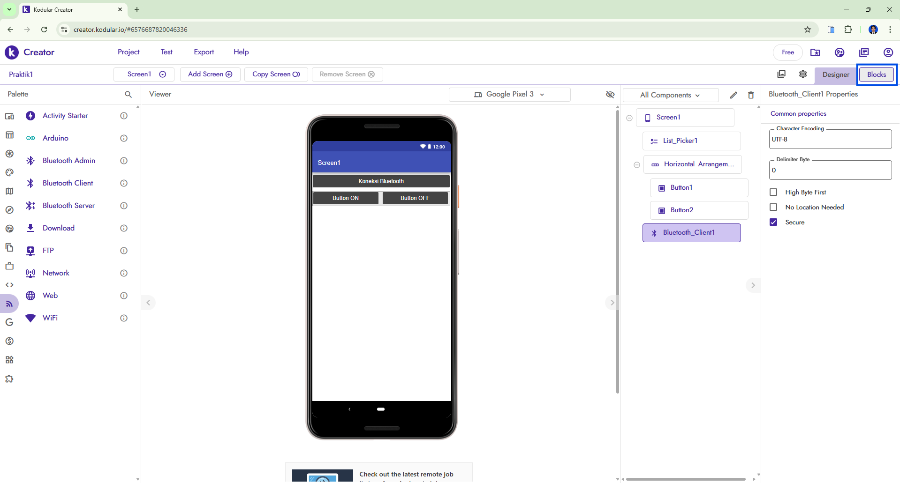
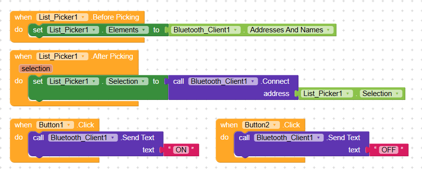

Media Pembelajaran Kontrol LED ESP32 via Kodular
Pelajari pembuatan aplikasi Android menggunakan Kodular untuk mengendalikan LED pada mikrokontroler ESP32 melalui komunikasi Serial Bluetooth Classic.
Panduan Memulai / Setup Board ESP32 Pertama Kali (Arduino IDE)
Tutorial DasarUnduh dan install software Arduino IDE (disarankan versi 2.x) melalui situs resmi arduino.cc.
Buka menu File > Preferences. Pada kolom Additional Boards Manager URLs, paste url berikut:
Buka Tools > Board > Boards Manager. Cari
keyword esp32 oleh Espressif Systems, lalu
klik Install.
Pilih board pada menu Tools > Board > ESP32 Arduino > DOIT ESP32 DEVKIT V1. Hubungkan kabel USB dan atur Port COM sesuai device manager.
1. Skema Rangkaian Hardware (Breadboard)
Pin GPIO2Koneksi Pin Rangkaian: Anoda LED (Kaki Panjang) dihubungkan ke GPIO2 (G2) ESP32, sedangkan Katoda LED (Kaki Pendek) dihubungkan ke GND.

2. Tampilan Antarmuka & Blok Logika Kodular
UI & Block LogicDesain Layout Aplikasi (Kodular Designer)

Logika Program (Kodular Blocks)

Catatan Sinkronisasi Data: Agar responsif dengan
fungsi readStringUntil('\n') pada ESP32, teks pengiriman
pada blok Kodular dikirim menggunakan string
"led1on\n" dan "led1off\n".
3. Program Arduino C++ (ESP32 Bluetooth Serial)
#include "BluetoothSerial.h"
BluetoothSerial SerialBT;
const int ledPin = 2;
String receivedData = "";
void setup() {
Serial.begin(115200);
SerialBT.begin("SMTI_YK");
pinMode(ledPin, OUTPUT);
delay(2000);
Serial.println("Bluetooth aktif, menunggu menerima pesan...");
}
void loop() {
if (SerialBT.available()) {
receivedData = SerialBT.readStringUntil('\n');
receivedData.trim();
Serial.print("Data diterima: ");
Serial.println(receivedData);
if (receivedData.equalsIgnoreCase("led1on")) {
digitalWrite(ledPin, HIGH);
Serial.println("LED ON");
}
else if (receivedData.equalsIgnoreCase("led1off")) {
digitalWrite(ledPin, LOW);
Serial.println("LED OFF");
}
}
}